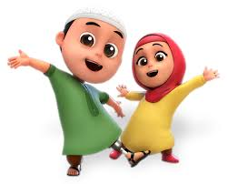

| Nusa & Rara |

|
|
Film yang dibuat oleh 130 animator Indonesia ini bercerita tentang keseharian anak-anak dan konflik kecil antara kakak dan adik (Nussa dan Rara).Konflik-konflik kecil yang dihadirkan dalam film ini memang sering dijumpai di masyarakat.
Nussa merupakan seorang anak laki-laki berusia sembilan tahun yang hadir sebagai karakter utama dalam cerita.Ia memiliki sifat anak kecil pada seusianya, terkadang dia mudah marah sendiri, dan merasa hebat dengan diri sendiri.Rara yang merupakan adik Nussa, adalah seorang anak perempuan berusia lima tahun yang memiliki sifat kewaspadaan, selalu aktif, periang, dan berimajinasi tinggi.Rara juga memiliki sifat anak kecil di seusianya yang suka ceroboh dan tidak sabaran, dan hal ini sering dijadikan sebagai salah satu permulaan cerita konflik dari karakter Rara.
Dalam film yang selalu menampilkan cerita inspirasi kebaikan ini juga menampilkan tokoh ibu yang biasa dipanggil umma.Ia menjadi panutan Nussa dan Rara karena berwatak periang, perhatian, dan bijaksana.Ada juga tokoh Abba sebagai ayah Nussa, Antta kucing kesayangan Rara, serta Syifa dan Abdul sebagai sahabat Nussa.
Film yang disutradarai Bony Wirasamono ini dimulai dari karakter Nussa yang menjadi juara bertahan di science fair dan ingin mempertahankan prestasinya. Selain itu, Nussa juga merancang roket lebih keren bersama Abba (ayahnya).Akan tetapi, Nussa mengalami kegagalan dalam percobaan, apalagi di sekolahnya ada anak baru bernama Jonni yang mempunyai roket super canggih.Kehadiran Jonni menjadi tantangan tersendiri bagi Nussa.
Banyak pesan yang bisa diambil dari film Nussa, misalnya tentang keikhlasan.Ikhlas di film ini tampak ditonjolkan di berbagai karakter, misalnya Nussa dan Jonni yang akhirnya ikhlas saling membantu.Selain itu, pesan dalam film ini juga ditujukan untuk orang tua, seperti apa yang harus dilakukan orang tua saat anak meminta hal yang kurang bermanfaat.Kesabaran yang diberikan Umma dan Abba juga memberikan pesan tersendiri bagi orang tua. |